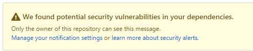
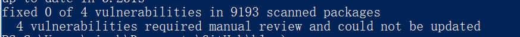
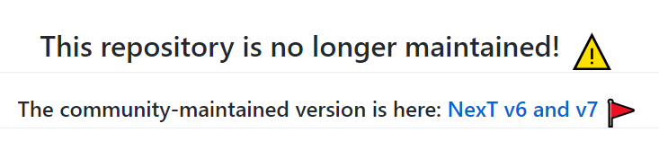
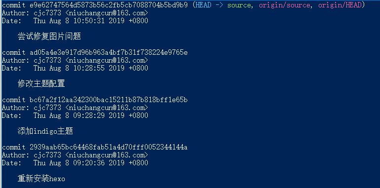
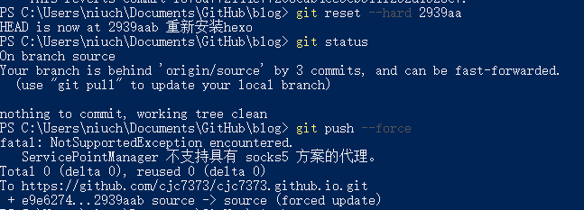

缘由
直接原因是 Github 的一个假装很贴心的功能：

由于我的 Hexo 已年代久远，所以有了一堆漏洞，在尝试 Github 的自动修复未果之后，同时也因为当初搞 Hexo 的时候不是很懂，文档也没写好，就决定重新装一遍。
过程
环境
node.js 6.4.1
hexo 3.9.0
hexo-cli 2.0.0

官方文档上写需要 node.js 6.9+，然而我是 6.4，不知道会不会锅。
Hexo 安装
首先，把仓库 clone 下来后，备份一份源文件。然后找一个空文件夹，按照官方文档的指引，执行：
hexo init
npm install
（我发现现在 hexo init 会同时自动执行 npm install命令了）

然而还是有一个漏洞，不管了。
然后删除原文件夹中文件（保留.git），把新的文件复制过去。同时把备份文件夹中的source文件夹覆盖过去。（自动创建 .gitignore 好评）
这时候基本的安装就完成了，接下来打开 Github Desktop 开始对比差异。
在全局配置_config.yml中，

这个配置是为每篇博文创建一个单独的资源文件夹。
基本不用变，直接 discard changes 即可。
.travis.yml 和 deploy.sh 也直接还原。
图片的问题先不管，有问题再说。
主题安装
剩下的差异全是主题文件。既然都重新搞了，那就换一个主题吧。在自己的 stars 里找了个主题 hexo-theme-indigo，看了下也支持 Analysis、Disqus，就决定用它了。
接下来就开始按照主题文档来安装。首先 clone 仓库，我选择 card 分支，感觉比较好看（其实也没有对比）。
在 hexo 根目录执行git clone -b card https://github.com/yscoder/hexo-theme-indigo.git themes/indigo，下载主题文件。安装插件hexo-renderer-less hexo-generator-feed hexo-generator-json-content hexo-helper-qrcode。
开启标签页
hexo new page tags修改
hexo/source/tags/index.md的元数据``` layout: tags comments: false
```
开启分类页
仅 card theme 支持。
hexo new page categories修改
hexo/source/categories/index.md的元数据``` layout: categories comments: false
```
话说用 Github Desktop commit 的时候因为主题文件夹也是一个 git 仓库，所以报错了，在命令行中 add，提示

于是我去 Google 了下子模块，感觉这会让问题变复杂，同时这个主题已经很久没更新过了，干脆把主题的版本库删了吧。删除 .git文件夹后，提交成功。
主题配置
编辑站点配置文件。启用主题theme: indigo。feed 是用来 rss 的，不管。jsonContent 用来搜索，如下：
jsonContent配置
为了节约资源，可以对 jsonContent 插件生成的数据字段进行配置，减少数据文件大小。参考 hexo-generator-json-content
jsonContent: meta: false pages: false posts: title: true date: true path: true text: true raw: false content: false slug: false updated: false comments: false link: false permalink: false excerpt: false categories: false tags: true
编辑主题配置文件，themes/indigo/_config.yml。
左侧菜单：
添加新菜单项时，在 menu 下增加子属性即可。属性说明如下：
menu: link: # fontawesome图标，省略前缀，本主题前缀为 icon-，必须 text: About # 菜单显示的文字，如果省略即默认与图标一致，首字母会转大写 url: /about # 链接，绝对或相对路径，必须 target: _blank # 是否跳出，省略则在当前页面打开fontawesome 图标已集成到主题中，你可以到 这个页面 挑选合适的图标。
我修改为如下：
menu:
home:
text: 主页
url: /
archives:
url: /archives
tags:
url: /tags
th-list:
text: Categories
url: /categories
github:
url: https://github.com/cjc7373
target: _blank
user:
text: 关于
url: /about
其余改动略。
由于这个主题为国人制作，配置文件都带有中文注释，还是很友好的。
修锅
图片不出意外地崩了。。而且不止首页图片，是所有。。装插件试试。npm install hexo-asset-image --save。装完又多了两个漏洞，这插件是有多久没更新了。。自动修复试试。

GG。
语言是错的。hexo 配置文件改成 zh-cn 试试。
头像好丑。改成猫头鹰了。
坑爹啊，img不说清楚在哪里。。我在根目录下创建了img，结果找了一下发现是在themes\indigo\source\img下，图片还是炸。待修。暂时回滚至以前的版本。
回滚
Updated in 2019/10/7

时隔两个月,重新拾回了我的博客..
这个主题的锅不想修了..
又看了几个主题之后,看看似乎原主题也挺好的..
所以我又用回了 Next..
看了一下 Next 换维护者了..

大致过程是~~重来一遍上述过程~~回退到某一个提交即可.
不过我把 node.js 的版本更新到了 v12.11.1
首先这四个 commit 记录不需要了,我建了个新的分支 theme-indigo 扔着..
然后,先fetch一下,因为我在远程仓库上回滚了之前的更改..然后发现记错了,回滚的是 master 分支..
然后看一下 log, 回退到 2939aa 这个 commit.

git reset --hard 2939aa
此时本地分支已经落后于远程分支了,需要强制推送一遍.git push --force

看了一下这个提交是 Hexo 安装 完成之后.
接下来安装主题, 先从 Github 下载一个 release. 目前是 v7.4.1
看了一眼从5.x升级文档, 全局配置中 language 要从 zh-Hans 变为 zh-CN
~~然后并没有发现其他配置文档~~ 是有的, 只不过是英文, 在这里, 只能一行一行看 _config.yml 了.
用 sublimerge 对比一下新旧配置文件的差异..

瞎改了一点.
ok. 测试一下, 果然图片又崩了. 原因引用的图片地址多了一级. 把多余的地址删掉是能够正常显示的.

然而原来那个插件 hexo-asset-image 没用了. 无奈继续 Google, 找到了一篇英文博文, 指出了另一个插件hexo-asset-link, 尝试之, 发现能完美在首页及内容页显示图片.
至此, 我的博客算是修好了. (这篇博客写得不成样子,大雾,希望没人看到吧
结语
两次修锅的过程, 让我看到了 Hexo 的插入图片的巨坑. 用图床能够避免这个问题, 然而图床也有缺点, 我还是更喜欢直接插入图片. 感觉上这部分是由 Hexo 来处理的, 与主题无关, 所以还是可以换个主题玩玩的, 目前来说, 还是先专注于内容吧.
有时间也可以试试 Typecho, Jekyll, Pelican, Hugo 等其他博客生成器.